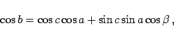

Inhalt Index DeskTop Bronstein

 Geometrie Sphärische Trigonometrie Haupteigenschaften sphärischer Dreiecke Grundformeln und Anwendungen
Geometrie Sphärische Trigonometrie Haupteigenschaften sphärischer Dreiecke Grundformeln und Anwendungen


|  | (3.192b) |
Der Seitenkosinussatz der sphärischen Trigonometrie entspricht dem Kosinussatz der ebenen Trigonometrie. Die Bezeichnung Seitenkosinussatz bringt zum Ausdruck, daß dieser Satz die drei Seiten des sphärischen Dreiecks enthält.
Die Bezeichnungen der Größen entsprechen denen der Abbildung.